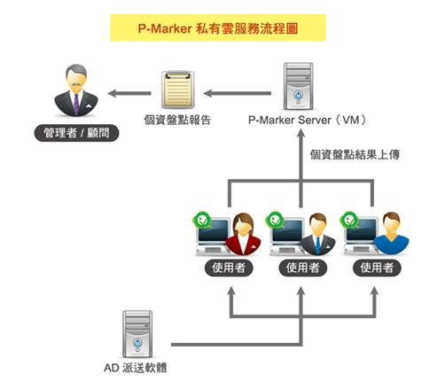
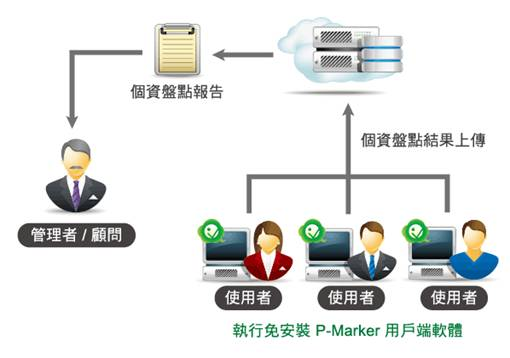

服務介紹
P-Marker Cloud 是一個自動化個資檔案盤點服務，用於清查個人電腦中所包含的個人資料檔案，協助企業或公務機關找出內部所有機敏個資，落實個人資料檔案盤點，以擬定並實施後續個資保護措施。
系統架構
本服務只需在用戶端執行免安裝盤點軟體，就可以立即啟動個資盤點掃描，並將掃描完成的結果進行遮罩與加密處理後，送至主機端彙整成個資盤點報表供管理者或是稽核人員觀看。
Openfind 目前提供公有雲與私有雲兩種版本，公有雲版本可直接到 Openfind P-Marker 官方網站進行購買，私有雲版本的購買請直接向 Openfind 業務人員聯絡，聯絡電話：(02) 2553-7272。
▪ 私有雲架構
透過 AD Server 或資產管理軟體自動部署 P-Marker 盤點程式，可掃描 PC 與 Server，耗能小、背景執行，不影響員工日常工作。

▪ 公有雲架構
使用者只需在電腦中執行 P-Marker 用戶端軟體（免安裝綠色軟體），系統就會把盤點結果經過加密與遮罩處理後送上雲端伺服器，並產出個資盤點結果報表供管理者或是稽核人員觀看。
